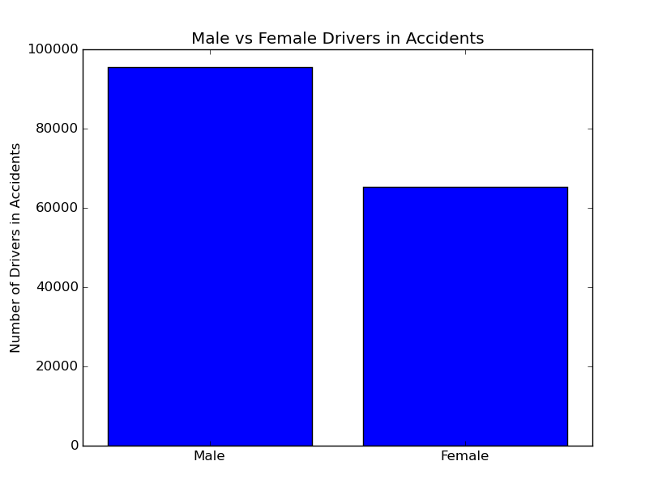
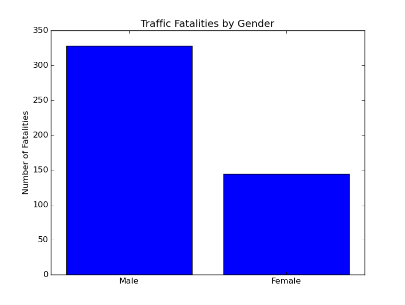
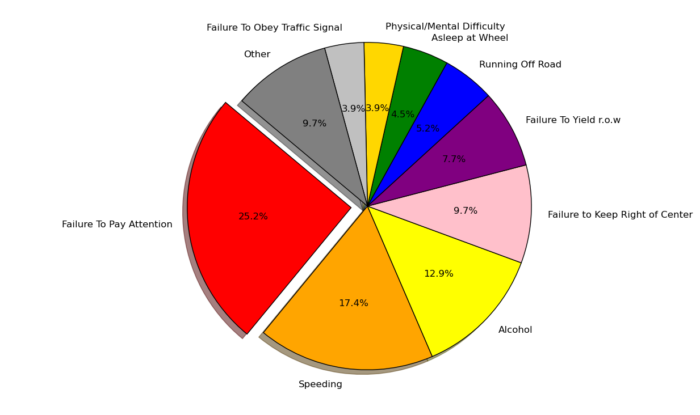

Junior at Illinois State University, studying Computer science.
Github ProfileMy github has a few of my projects including a game, an image analyzer, and this website's source.
I can be contacted at nfriche (at) ilstu (dot) edu
The following are the results of my data analysis project at RedBirdHacks 2016. I will post my results as the event goes on. All code and data can be found here
For a data set to be considered a part of big data, it commonly must have some or all of the 4 v's. These are volume, variety, velocity, and veracity. For my project, I chose the data set of all traffic accidents in the state of Maryland for 2015(available here) This data set includes a ton of information on every traffic accident in the state of Maryland during 2015. The goal is to identify, model, and comment on trends present in the data, such as the number of DUI related traffic accidents, rate of traffic accidents during poor weather, and other factors.
This data set was released by the government of the state of Maryland on February 11th 2016 and satisfies several of the 4 v's of big data. With almost 19,340,987 points of data to consider, this data definitely falls into the high volume category. The data also contains a high amount of variety which satisfies the second v. The third v is veracity which is the trustworthiness of the data, and considering that this data was published by the government, I believe it to be accurate. The final v is velocity and our data does not satisfy this principal because no new data is being analyzed, however 3/4 is certainly sufficient to declare this data set as being a part of big data.
My goal is to analize traffic collision data and determine how we can prevent future accidents
While writing Python code to examine data is effective and quick, there were plenty of times where I wanted to see the full picture behind an accident. Who was involved? What types of cars were there? Was there are fatality? To help answer these questions I built Lookup.py; a tool to help me see all the pertinent information in any particular crash. Simply punch in a report number, and see everything that happened. This tool proved invaluable when examining data by hand.

Accidents increase during the year with a peak in Q4. Based on my analysis, the reason for this is that Q4 has the highest number of complications, including, holidays which promote travel and drinking, and winter weather which increases number of crashes. In total there were 110,737 accidents in 2015. This conclusion is supported by data from mva.maryland.gov which says that total number of crashes should be in this range.

Men are almost a third more likely to be in an accident as a driver compared to women. This conclusion is supported by data from CBS who mention that men are more likely to drive recklessly, and more likely to drive drunk. Because of this erratic behavior, men statistically have higher insurance prices than women.(source).
Likely due to their reckless driving, men are more likely to die in a traffic collision. By my analysis, men make up almost 70% of all fatalities in crashes. This conclusion is supported by the iihs who claim that "Males accounted for 71 percent of passenger vehicle driver deaths".
By my analysis, there were 472 fatalities in 2015. This conclusion is supported by the NHTSA (National Highway Traffic Safety Administration)which indicates that this number of fatalities is consistent with past values. While 472 may not sound like a lot, we can certainly reduce that number with minimal effort, and I will propose ways to reduce these incidents at the end of my analysis.
There are thousands of different reasons a car accident can happen. My analysis points out the most common reasons, which include failing to pay attention, speeding, and alcohol. My analysis is consistent with this article. Failing to pay attention is a broad category, and you could certainly argue what can and cannot fall under this umbrella. For example, talking, texting, eating, playing on a cellphone, moving things in the cabin, are all examples of things that may distract drivers just enough to cause them to get into an accident. You could also argue that things such as failing to yield to right of way, could be caused by a driver being distracted. Now that we've identified the leading causes of accidents, lets break this down and understand what are the causes of traffic fatalities.

The greatest loss of life comes from distracted driving, speeding, and alcohol. The major causes of accidents in general are also the major causes of traffic fatalities.
A common piece of advice to give to new drivers is to be wary of driving on holidays because there may be more drunk drivers on the road. My analysis is consistent with this old adage. From the data the most dangerous days to be on the road were Halloween and New Years Day, however, while there was a definite increase on these days, they were not that far off from some random weekends. Saturday nights and early Sunday morning were prime time for DUI/DWI crashes. For example, the third highest number of DUI/DWI accidents during 2015 was on December 5th with 44 crashes(compare to 46 on Halloween).
The winners are not that surprising considering that they are some of the most common cars on the market. However, these are the cars that the data indicates are involed in the most crashes.

The old addage that young people get in more car accidents is correct. The age range of 15-24 leads with number of accidents attributed to them per 1000 people, with over 29 per 1000. However, they are followed closely by the 25-34 demographic. My data also indicates that older people start picking up the trend of more accidents again

1. Because men represent the majority involved in car crashes and crash fatalities, we should incentivize them to drive more carefully by reducing their car insurance costs if they have a history of safe driving.
2. Distracted driving is the major cause of crashes and fatalities. We need to continue campaigns discouraging texting and driving as well as teach drivers to be aware of their surroundings while driving.
3. By continuing to enforce strict speed limits and increasing police patrolling for speeders, I believe we can reduce the number of traffic collisions and fatalities by discouraging speeding.
4. Improving designated driver, and taxi services such as Uber can help reduce the number of people drinking and driving. In addition, we need to promote a culture that discourages drunk driving and recognizes the risk.
I have neglected to mention up until now, the greatest threat to drivers. Eyepatches are responsible for a large number of accidents because drivers would not be able to see. This only amplifies when they are shrining brilliantly, which could cause distraction and endanger more live. Thats right.... i'm talking about..
Please note, a golden pirate dragon is not a real concern for drivers. It's just a part of the hackathon.